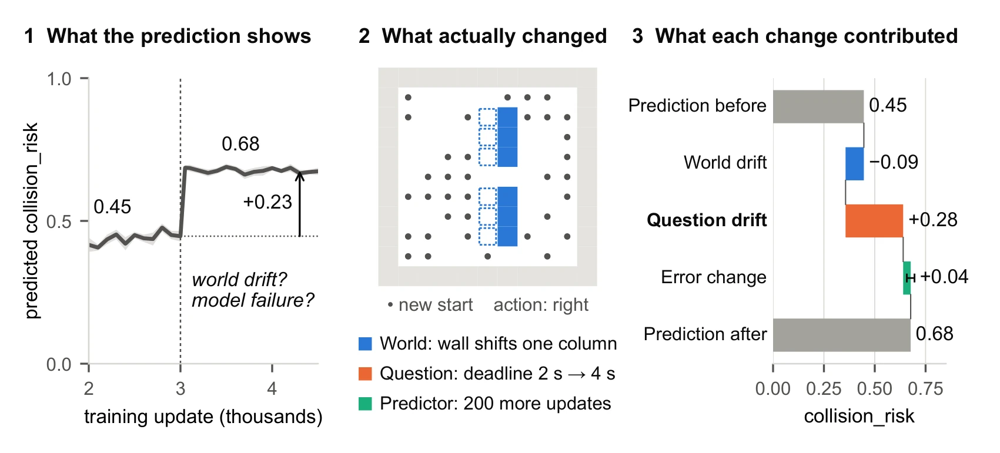

World Drift or Question Drift? Question Identity as a Precondition for Continual World Model Evaluation
Continual World Model Workshop, NeurIPS 2026
TL;DR A fixed label is not a fixed question. A change in a world model's prediction splits exactly into world drift, question drift and a change in error — so continual evaluation must log its questions and score each prediction against its own target.
Abstract
Continual world models are commonly evaluated by tracking their predictions under fixed labels across model updates. We argue that such comparisons are meaningful only if the underlying question (what is predicted, under which conditions and within which horizon) stays the same. When this question changes while the label does not, we call it question drift. For example, a predicted collision risk can rise even as the environment becomes safer, simply because its deadline was extended. We show that a change in prediction splits exactly into world drift, question drift and a change in prediction error, and we prove that a log keeping only the current question definition may not even reveal whether the question changed. Question drift also distorts scoring: matched risk varies with event uncertainty even for a correct forecast, scoring revised predictions against the previous question’s targets can overstate or understate error, and replacing historical questions hides forgetting. Controlled grid-world experiments with exact simulator probabilities illustrate each effect. We conclude with three recommendations for continual evaluation: log question definitions and evaluation protocols, score each prediction against its own target, and evaluate new checkpoints on fixed historical questions.
BibTeX
@inproceedings{hu2026questiondrift,
title = {World Drift or Question Drift? Question Identity as a
Precondition for Continual World Model Evaluation},
author = {Hu, Shanglong},
booktitle = {NeurIPS 2026 Workshop on Continual World Models},
year = {2026},
url = {https://openreview.net/forum?id=kKaFwdnNal}
}